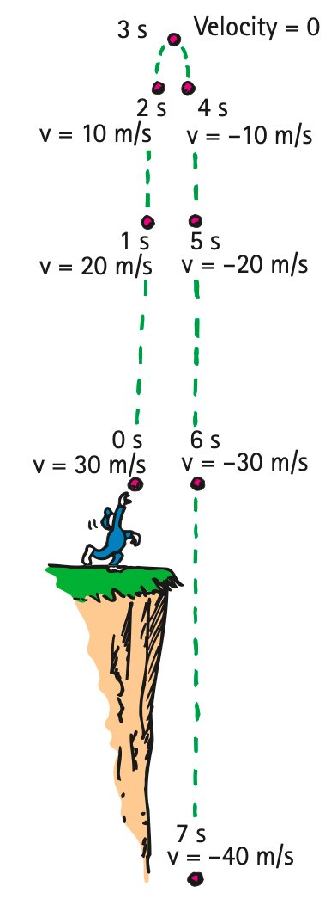

Free Fall
How Fast
Things fall because of the force of gravity. When a falling object is free of all restraints—no friction, with the air or otherwise—and falls under the influence of gravity alone, the object is in a state of free fall. (We’ll consider the effects of air resistance on falling objects in Chapter 4.) Table 3.2 shows the instantaneous speeds of a freely falling object at 1-second intervals. The important thing to note in these numbers is the way in which the speed changes. During each second of fall, the object gains a speed of 10 meters per second. This gain per second is the acceleration. Free-fall acceleration is approximately equal to 10 meters per second each second or, in shorthand notation, 10 m/s2 (read as 10 meters per second squared). Note that the unit of time, the second, enters twice—once for the unit of speed and again for the time interval during which the speed changes.
In the case of freely falling objects, it is customary to use the letter g to represent the acceleration (because the acceleration is due to gravity). The value of g is very different on the surface of the Moon and on the surfaces of other planets. Here on Earth, g varies slightly in different locations, with an average value equal to 9.8 meters per second each second or, in shorter notation, 9.8 m/s2. We round this off to 10 m/s2 in our present discussion and in Table 3.2 to establish the ideas involved more clearly; multiples of 10 are more obvious than multiples of 9.8. Where accuracy is important, the value of 9.8 m/s2 should be used.
Note in Table 3.2 that the instantaneous speed or velocity of an object falling from rest is consistent with the equation that Galileo deduced with his inclined planes:
Velocity acquired = acceleration * time
The instantaneous velocity v of an object falling from rest4 after a time t can be expressed in shorthand notation as
v = gt
| Time of Fall (seconds) | Velocity Acquired (meters/second) |
|---|---|
| 0 | 0 |
| 1 | 10 |
| 2 | 20 |
| 3 | 30 |
| 4 | 40 |
| 5 | 50 |
| · · · | · · · |
| t | 10t |
To see that this equation makes good sense, take a moment to check it with Table 3.2. Note that the instantaneous velocity or speed in meters per second is simply the acceleration g = 10 m/s2 multiplied by the time t in seconds.
Free-fall acceleration is clearer when we consider a falling object equipped with a speedometer (Figure 3.7). Suppose a rock is dropped from a high cliff and you witness it with a telescope. If you focus the telescope on the speedometer, you’d note increasing speed as time progresses. By how much? The answer is, by 10 m/s each succeeding second.

So far, we have been considering objects moving straight downward in the direction of the pull of gravity. How about an object thrown straight upward? Once released, it continues to move upward for a time and then comes back down. At the object’s highest point, when it is changing its direction of motion from upward to downward, its instantaneous speed is zero. Then it starts downward just as if it had been dropped from rest at that height.
During the upward part of this motion, the object slows as it rises. It should come as no surprise that it slows at the rate of 10 meters per second each second—the same acceleration it experiences on the way down. So, as Figure 3.8 shows, the instantaneous speed at points of equal elevation in the path is the same whether the object is moving upward or downward. The velocities are opposite, of course, because they are in opposite directions. Note that the downward velocities have a negative sign, indicating the downward direction (it is customary to call up positive and down negative). Whether the object is moving upward or downward, its acceleration is 10 m/s2 the whole time.

How Far
How far an object falls is entirely different from how fast it falls. With his inclined planes, Galileo found that the distance a uniformly accelerating object travels is proportional to the square of the time. The distance traveled by a uniformly accelerating object starting from rest is
Distance traveled = ½ (acceleration * time * time)
This relationship applies to the distance something falls. We can express it, for the case of a freely falling object, in shorthand notation as
d = ½gt2
in which d is the distance something falls when the time of fall in seconds is substituted for t and squared.5 If we use 10 m/s2 for the value of g, the distance fallen for various times will be as shown in Table 3.3.
Note that an object falls a distance of only 5 meters during the first second of fall, although its speed is then 10 meters per second. This may be confusing; we may think that the object should fall a distance of 10 meters. But for it to fall 10 meters in its first second of fall, it would have to fall at an average speed of 10 meters per second for the entire second. It starts its fall at 0 meters per second, and its speed is 10 meters per second only in the last instant of the 1-second interval. Its average speed during this interval is the average of its initial and final speeds, 0 and 10 meters per second. To find the average value of these or any two numbers, we simply add the two numbers and divide the total by 2. This equals 5 meters per second, which, over a time interval of 1 second, gives a distance of 5 meters. As the object continues to fall in successive seconds, it will fall through ever-increasing distances because its speed is continuously increasing.
| Time of Fall (seconds) | Distance Fallen (meters) |
|---|---|
| 0 | 0 |
| 1 | 5 |
| 2 | 20 |
| 3 | 45 |
| 4 | 80 |
| 5 | 125 |
| · · · | · · · |
| t | 10t2 |

It is a common observation that many objects fall with unequal accelerations. A leaf, a feather, and a sheet of paper may flutter to the ground slowly. The fact that air resistance is responsible for these different accelerations can be shown very nicely with a closed glass tube containing light and heavy objects—a feather and a coin, for example. In the presence of air, the feather and coin fall with quite different accelerations. But, if the air in the tube is removed by a vacuum pump and the tube is quickly inverted, the feather and coin fall with the same acceleration (Figure 3.10). Although air resistance appreciably alters the motion of things like falling feathers, the motion of heavier objects like stones and baseballs at ordinary low speeds is not appreciably affected by the air. The relationships v = gt and d = ½gt2 can be used to obtain a very good approximation for most objects falling in air from an initial position of rest.


Hang Time
Some athletes and dancers have great jumping ability. Leaping straight up, they seem to “hang in the air,” defying gravity. Ask your friends to estimate the “hang time” of the great jumpers—the time a jumper is airborne with feet off the ground. They may say 2 or 3 seconds. But, surprisingly, the hang time of the greatest jumpers is almost always less than 1 second! A longer time is one of many illusions we have about nature.
A related illusion is the vertical height a human can jump. Most of your classmates probably cannot jump higher than 0.5 meter. They can step over a 0.5-meter fence, but, in doing so, their body rises only slightly. The height of the barrier is different from the height a jumper’s “center of gravity” rises. Many people can leap over a 1-meter fence, but only rarely does anybody raise the “center of gravity” of their body 1 meter. Even the greatest basketball stars can’t raise their body 1.25 meters high, although they can easily reach considerably above the more-than-3-meter-high basket.
Jumping ability is best measured by a standing vertical jump. Stand facing a wall with feet flat on the floor and arms extended upward. Make a mark on the wall at the top of your reach. Then make your jump and, at the peak, make another mark. The distance between these two marks measures your vertical leap. If it’s more than 0.6 meter (2 feet), you’re exceptional.
Here’s the physics. When you leap upward, jumping force is applied only while your feet make contact with the ground. The greater the force, the greater your launch speed and the higher the jump. As soon as your feet leave the ground, your upward speed immediately decreases at the steady rate of g—10 m/s2. At the top of your jump, your upward speed decreases to zero. Then you begin to fall, gaining speed at exactly the same rate, g. If you land as you took off, upright with legs extended, then time rising equals time falling. Hang time is the sum of rising and falling times. While you are airborne, no amount of leg or arm pumping or other bodily motions can change your hang time.
The relationship between time up or down and vertical height is given by
d = ½gt2
If we know the vertical height d, we can rearrange this expression to read
t = √(2d / g)
No basketball player is known to have attained a standing vertical jump of 1.25 meters.6 Setting d as 1.25 meters and using the more precise value of 9.8 m/s2 for g, we solve for t, half the hang time, and get
t = √(2d / g) = √(2(1.25 m) / 9.8 m/s2) = 0.50 s
Double this (because this is the time for one way of an up-and-down round trip) and we get a record-breaking hang time of 1 second.
We’re discussing vertical motion here. How about running jumps? We’ll learn in Chapter 10 that hang time depends on only the jumper’s vertical speed at launch. While airborne, the jumper’s horizontal speed remains constant and only the vertical speed undergoes acceleration. Interesting physics!
How Quickly “How Fast” Changes
Much of the confusion that arises in analyzing the motion of falling objects comes about because it is easy to get “how fast” mixed up with “how far.” When we wish to specify how fast something is falling, we are talking about speed or velocity, which is expressed as v = gt. When we wish to specify how far something falls, we are talking about distance, which is expressed as d = ½gt2. It is important to understand that speed or velocity (how fast) and distance (how far) are entirely different from each other.
A most confusing concept, and probably the most difficult encountered in this book, is “how quickly does how fast change”—acceleration. What makes acceleration so complex is that it is a rate of a rate. It is often confused with velocity, which is itself a rate (the rate of change of position). Acceleration is not velocity, nor is it even a change in velocity. It is important to understand that acceleration is the rate at which velocity itself changes.
d = (initial velocity + final velocity) / 2 * time
d = (0 + gt) / 2 * t
d = ½gt2
(See Appendix B for further explanation.)
Textbook Sections: 3.5
Learning Target: Students will describe free fall as motion under the influence of gravity alone and use simple free-fall relationships to determine speed or distance fallen.
- I can explain why objects in free fall accelerate at the same rate when air resistance is ignored.
- I can use $g \approx 10\text{ m/s}^2$ to determine speed gained during free fall.
- I can use free-fall patterns to compare distance fallen during different time intervals.
- I can distinguish free fall from falling with significant air resistance.